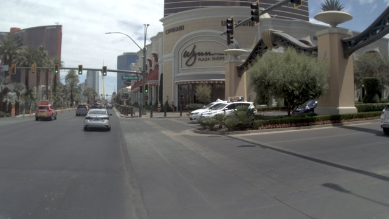
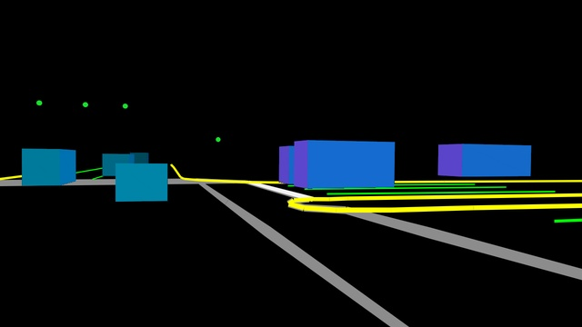

Same plan from raster or camera


raster twin same right turnCamera data and score
Four closed-loop benchmarks
How Argus works
- 1
RL teaches driving. Argus-Raster learns to drive by self-play RL on rasterized camera views, over 5M hours of driving, with single-agent PPO in logged scenes interleaved near the end. A trajectory head is trained last. The network is built for the transfer: rasters with real camera perspective, and an encoder E split from a driving head H that any camera rig can share.
- 2
Alignment teaches seeing. Only the encoder is replaced, by a pretrained image encoder that mirrors E stage by stage. On raster twins of real scenes, it learns to match what the frozen Argus-Raster sees and does. Argus then drives from real cameras.
Watching Argus drive
Closed-loop drives of Argus in AlpaSim, on PAI validation scenes reconstructed with NuRec. Each clip shows the five camera views the policy receives, and the trajectory it plans from them.
Citation
@article{yin2026argus,
title = {Argus: From Rasterized-Camera Self-Play to Real-Camera Driving},
author = {Yin, Yuan and Ramzi, Elias and Vu, Tuan-Hung and Lafon, Marc and Xu, Yihong
and Zablocki, {\'E}loi and Boulch, Alexandre and Bursuc, Andrei and Cord, Matthieu},
year = {2026},
eprint = {TODO},
archivePrefix = {arXiv},
primaryClass = {cs.CV}
}